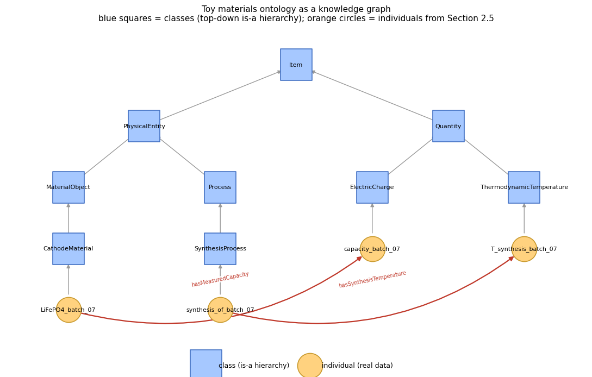

2. Ontologies & EMMO#
Notebook 1 showed that a value needs metadata to be reusable — a number needs a name, a unit, a sample ID. This notebook asks the next question: how do you make sure your name for something (“yield strength”) means exactly the same thing as someone else’s name for it, to both a human reader and a piece of software? That is the problem ontologies solve, and EMMO (the European Materials Modelling Ontology) is the specific ontology this course uses as a worked example.
Topics
The problem: same word, different meaning (and vice versa)
What an ontology actually is (classes, individuals, “is-a” relations)
Controlled vocabulary vs. taxonomy vs. ontology
EMMO: what it is, and why materials science needs one
Hands-on: building a small ontology in Python with
owlready2Hands-on: exploring the real EMMO with
rdfliband SPARQLSeeing the ontology as a graph (visualising it with
networkx)Reasoning: deriving facts that were never explicitly stated
Closing the loop: fixing the synonymy problem from Section 2.1
Catching a dimensionally wrong unit a plain CSV column would miss
2.1 The Problem: Words Are Not Reliable Identifiers#
Two failure modes show up constantly when combining datasets from different labs, instruments, or papers:
Synonymy — the same concept, different words. “Yield strength”, “0.2% proof stress”, and “\(\sigma_y\)” all refer to the same physical quantity; a script that filters by the exact string
"yield_strength"will silently miss the other two.Homonymy — the same word, different concepts. “Annealing” means something different in metallurgy (a heat treatment to relieve stress) than in molecular biology (letting DNA strands re-anneal), and even within materials science, “conductivity” alone is ambiguous between electrical and thermal conductivity without a unit or qualifier attached.
A spreadsheet column header is just a string — it cannot tell a computer which of these it means. An ontology fixes this by giving every concept a single, unambiguous, machine-readable identity (in practice: a URI) and by formally stating how concepts relate to one another, so software (and careful humans) can tell “these two columns mean the same thing” from “these two columns merely look similar.
2.2 What Is an Ontology?#
Strip away the jargon and an ontology is a formal, computer-readable version of something you already build informally whenever you organise ideas: a hierarchy of classes (“kinds of thing”), individuals (“specific instances of a kind”), and relations between them, plus a rule that a more specific class inherits everything true of the more general class above it — usually called an “is-a” hierarchy.
A familiar, non-materials example: biological taxonomy.
Animal
└── Mammal
└── Carnivore
└── Felidae (cats)
└── Panthera leo (lion) ← an individual: "Simba"
“Every Felidae is a Carnivore” is a class-level statement (an axiom);
“Simba is a Panthera leo” relates a specific individual to a class.
Because the hierarchy is explicit, a query for “all carnivores” automatically
includes lions without anyone having to list every species by hand — the
same benefit you want when querying “all thermodynamic quantities” in a
materials database and getting temperature, entropy, and heat capacity
back, without hand-maintaining that list yourself.
Ontologies add one more ingredient beyond a plain hierarchy: relations
other than “is-a” — e.g. “a SynthesisProcess has a Temperature” —
which is what lets an ontology describe not just categories, but how real
things are connected.
2.3 Controlled Vocabulary vs. Taxonomy vs. Ontology#
These three terms are often used loosely; it helps to know where each one stops.
Level |
What it provides |
Example |
Limitation |
|---|---|---|---|
Controlled vocabulary |
A fixed, agreed-upon list of allowed terms |
|
No structure between terms — flat list only |
Taxonomy |
A controlled vocabulary plus an is-a hierarchy |
Linnaean biological classification |
Only one relation type (is-a); no formal logic |
Ontology |
A taxonomy plus additional relations, properties, and formal logical axioms that software can reason over |
EMMO |
Requires more upfront modelling effort |
Materials data often starts life governed only by a controlled vocabulary (a dropdown menu in a lab’s electronic notebook). An ontology is what you reach for once you need software to combine data across many such vocabularies automatically — which is precisely the situation a shared European materials-data infrastructure is in.
2.4 Introducing EMMO#
EMMO — the European Materials & Modelling Ontology
(originally: Elementary Multiperspective Material Ontology) — is a
foundational (or “top-level”) ontology purpose-built for physical
science and engineering. It is developed and maintained by the European
Materials Modelling Council (EMMC) as an open, versioned OWL ontology,
published at the persistent identifier https://w3id.org/emmo and hosted
on GitHub at github.com/emmo-repo/EMMO under a CC-BY-4.0 licence.
What makes EMMO different from “just another controlled vocabulary” is that
it is grounded in formal philosophy and physics rather than convenience:
every concept ultimately derives from a single root class (Item), and
reality is organised through several formal “Perspectives” — for
example a causal perspective (how things influence each other) and a
semiotic perspective (how signs, symbols, and data represent things) —
rather than one flat “is-a” tree. You do not need to master this philosophy
to use EMMO productively, but it is why EMMO can precisely represent a
subtlety that trips up simpler vocabularies: a measured value is not the
same thing as the physical property it describes — “188 HV” is a sign
that represents a real hardness, and EMMO models that distinction
explicitly (you will see this concretely in Section 2.6).
EMMO is not meant to be used alone — domain-specific ontologies are built on top of it so that different domains stay interoperable through a shared foundation. BattINFO (the Battery Interface Ontology), used for FAIR battery data across European projects, is a well-known example built this way. NOMAD (Notebook 4) increasingly annotates its own schemas with EMMO concepts for exactly this reason: so that a “temperature” recorded in NOMAD means the same formal thing as a “temperature” recorded anywhere else that also uses EMMO.
2.5 Hands-on: Building a Small Ontology with owlready2#
The real EMMO’s top level is organised around formal Perspectives rather
than a simple two-branch split, which is more machinery than we need for a
first hands-on exercise. Instead, we will build a small, EMMO-inspired
toy ontology from scratch — materials as physical objects, syntheses as
processes, and properties as quantities — using the same basic building
blocks (classes, subclass axioms, relations, individuals) that EMMO itself
is built from. owlready2 lets you define an ontology using ordinary Python
class syntax.
from owlready2 import Thing, ObjectProperty, get_ontology, default_world
onto = get_ontology('http://example.org/mini_materials_onto.owl')
with onto:
# ── Top-level split (simplified — see note above about the real EMMO) ────
class Item(Thing):
"""Root class: everything nameable in this toy ontology is an Item."""
class PhysicalEntity(Item):
"""Something that exists independently in space and time."""
class Quantity(Item):
"""A sign that encodes a measured magnitude: a number plus a unit."""
# ── Physical entities split into persisting objects and processes ────────
class MaterialObject(PhysicalEntity):
"""A physical object considered as a whole persisting through time."""
class Process(PhysicalEntity):
"""A physical entity considered as it unfolds through time."""
class CathodeMaterial(MaterialObject):
pass
class SynthesisProcess(Process):
pass
class ThermodynamicTemperature(Quantity):
pass
class ElectricCharge(Quantity):
pass
# ── Relations: how entities connect to quantities ─────────────────────────
class hasQuantitativeProperty(PhysicalEntity >> Quantity):
"""Relates a physical object/process to a quantity describing it."""
class hasSynthesisTemperature(SynthesisProcess >> ThermodynamicTemperature):
is_a = [hasQuantitativeProperty]
class hasMeasuredCapacity(CathodeMaterial >> ElectricCharge):
is_a = [hasQuantitativeProperty]
print('Classes defined:', [c.name for c in onto.classes()])
Classes defined: ['Item', 'PhysicalEntity', 'Quantity', 'MaterialObject', 'Process', 'CathodeMaterial', 'SynthesisProcess', 'ThermodynamicTemperature', 'ElectricCharge']
Now that the classes exist, we can ask the same kind of questions you would ask of the real EMMO: what is a subclass of what, and what does a given class ultimately descend from?
print('Subclasses of PhysicalEntity:', [c.name for c in PhysicalEntity.subclasses()])
print('Subclasses of Quantity: ', [c.name for c in Quantity.subclasses()])
print()
print('CathodeMaterial.is_a (direct parents):', [c.name for c in CathodeMaterial.is_a])
print('CathodeMaterial ancestors (full chain):',
[c.name for c in CathodeMaterial.ancestors() if hasattr(c, 'name')])
Subclasses of PhysicalEntity: ['MaterialObject', 'Process']
Subclasses of Quantity: ['ThermodynamicTemperature', 'ElectricCharge']
CathodeMaterial.is_a (direct parents): ['MaterialObject']
CathodeMaterial ancestors (full chain): ['CathodeMaterial', 'MaterialObject', 'PhysicalEntity', 'Thing', 'Item']
Individuals: describing one real sample#
Classes describe kinds of thing; individuals are the specific
instances — this is where your actual lab data enters the ontology. Compare
this to cathode_record in Notebook 1: there, 'quantity_kind_iri' was a
plain string comment pointing at a concept; here, the link is a real,
machine-checkable relation.
sample = CathodeMaterial('LiFePO4_batch_07')
synthesis = SynthesisProcess('synthesis_of_batch_07')
T_synth = ThermodynamicTemperature('T_synthesis_batch_07')
capacity = ElectricCharge('capacity_batch_07')
synthesis.hasSynthesisTemperature.append(T_synth)
sample.hasMeasuredCapacity.append(capacity)
print(f'{sample.name} is a {[c.name for c in sample.is_a]}')
print(f'{synthesis.name} hasSynthesisTemperature -> '
f'{[t.name for t in synthesis.hasSynthesisTemperature]}')
print(f'{sample.name} hasMeasuredCapacity -> '
f'{[c.name for c in sample.hasMeasuredCapacity]}')
LiFePO4_batch_07 is a ['CathodeMaterial']
synthesis_of_batch_07 hasSynthesisTemperature -> ['T_synthesis_batch_07']
LiFePO4_batch_07 hasMeasuredCapacity -> ['capacity_batch_07']
Finally, save the ontology to disk. This is a real, valid OWL file —
exactly the kind of artefact EMMO itself is distributed as (just far
larger), and one that any OWL-aware tool (Protégé, owlready2, rdflib,
NOMAD’s schema tooling) can open.
onto.save(file='mini_materials_onto.owl', format='rdfxml')
with open('mini_materials_onto.owl', encoding='utf-8') as f:
text = f.read()
print(f'Saved {len(text)} characters of OWL/XML.')
print(text[:600] + '\n...')
Saved 2680 characters of OWL/XML.
<?xml version="1.0"?>
<rdf:RDF xmlns:rdf="http://www.w3.org/1999/02/22-rdf-syntax-ns#"
xmlns:xsd="http://www.w3.org/2001/XMLSchema#"
xmlns:rdfs="http://www.w3.org/2000/01/rdf-schema#"
xmlns:owl="http://www.w3.org/2002/07/owl#"
xml:base="http://example.org/mini_materials_onto.owl"
xmlns="http://example.org/mini_materials_onto.owl#">
<owl:Ontology rdf:about="http://example.org/mini_materials_onto.owl"/>
<owl:ObjectProperty rdf:about="#hasQuantitativeProperty">
<rdfs:domain rdf:resource="#PhysicalEntity"/>
<rdfs:range rdf:resource="#Quantity"/>
<
...
2.6 Hands-on: Exploring the Real EMMO#
Now let’s look at the real thing. EMMO is published as Turtle (.ttl), and
rdflib can load it directly from its canonical URL — no download step
needed, no account or API key required (this is a public ontology file, not
a database query, so it fits the “conceptual, read-only” spirit of this
part). Loading it fetches roughly 60,000 triples and can take a few seconds;
if you have no internet connection right now, read the expected output in
the surrounding text and come back to run this cell later.
import rdflib
emmo = rdflib.Graph()
emmo_loaded = False
try:
emmo.parse('https://w3id.org/emmo', format='turtle')
emmo_loaded = True
print(f'Loaded EMMO: {len(emmo)} triples')
except Exception as e:
print(f'Could not reach EMMO right now ({type(e).__name__}: {e}).')
print('Skip ahead and re-run this cell later when you have a connection.')
Loaded EMMO: 61530 triples
Reading the ontology’s own metadata#
An ontology describes itself, too — this is the same idea as the FAIR metadata from Notebook 1, applied to EMMO itself. Every well-published ontology should be able to answer “what version am I, who publishes me, under what licence?” directly from its own file.
if emmo_loaded:
q_meta = """
PREFIX dcterms: <http://purl.org/dc/terms/>
PREFIX owl: <http://www.w3.org/2002/07/owl#>
SELECT ?title ?version ?license ?homepage WHERE {
?ont a owl:Ontology .
OPTIONAL { ?ont dcterms:title ?title }
OPTIONAL { ?ont owl:versionInfo ?version }
OPTIONAL { ?ont dcterms:license ?license }
OPTIONAL { ?ont <http://xmlns.com/foaf/0.1/homepage> ?homepage }
}
"""
for row in emmo.query(q_meta):
print('Title: ', row.title)
print('Version: ', row.version)
print('Licence: ', row.license)
print('Homepage:', row.homepage)
Title: EMMO Maximal (EMAX)
Version: 1.0.3
Licence: https://creativecommons.org/licenses/by/4.0/legalcode
Homepage: https://github.com/emmo-repo/EMMO
Walking a real ancestor chain: Crystal#
This is the payoff of Section 2.2’s “is-a” idea, at full scale. We ask EMMO:
“what is a Crystal, ultimately?” — and follow every rdfs:subClassOf
link upward with a single SPARQL query using the + (one-or-more) path
operator.
def find_class_by_label(graph, label):
q = f"""
PREFIX rdfs: <http://www.w3.org/2000/01/rdf-schema#>
SELECT ?s WHERE {{ ?s rdfs:label "{label}"@en }}
"""
rows = list(graph.query(q))
if not rows:
q = f"""
PREFIX rdfs: <http://www.w3.org/2000/01/rdf-schema#>
SELECT ?s WHERE {{ ?s rdfs:label ?l . FILTER(STR(?l) = "{label}") }}
"""
rows = list(graph.query(q))
return rows[0][0] if rows else None
def ancestor_chain(graph, class_iri):
q = f"""
PREFIX rdfs: <http://www.w3.org/2000/01/rdf-schema#>
SELECT ?anc ?label WHERE {{
<{class_iri}> rdfs:subClassOf+ ?anc .
FILTER(isIRI(?anc))
OPTIONAL {{ ?anc rdfs:label ?label }}
}}
"""
return [str(row.label) for row in graph.query(q) if row.label]
if emmo_loaded:
crystal_iri = find_class_by_label(emmo, 'Crystal')
print('Crystal IRI:', crystal_iri)
print('Named ancestors of Crystal:')
for name in ancestor_chain(emmo, crystal_iri):
print(' ', name)
Crystal IRI: https://w3id.org/emmo#EMMO_0bb3b434_73aa_428f_b4e8_2a2468648e19
Named ancestors of Crystal:
CrystallineMaterial
MaterialByStructure
MaterialByClassicalMaterialsScience
Material
OrdinaryMatter
MatterByType
Matter
PhysicalObject
InteractingSystem
GenericPhysicalSystem
CausalSystem
CausalCluster
Fusion
EMMO
CausalStructure
Item
Substance
MatterByStructure
CompositePhysicalObject
PhysicalObjectByBond
Notice that Crystal climbs through CrystallineMaterial, Material,
OrdinaryMatter, PhysicalObject, all the way up to the root Item — a
much deeper and more careful hierarchy than a spreadsheet dropdown could
ever encode, and precisely why a query for “all PhysicalObject” would
correctly retrieve a Crystal sample without you ever writing that
connection by hand.
The payoff: a quantity is modelled as a sign#
Now repeat the same query for SpecificHeatCapacity — a physical
quantity, not a physical object like Crystal.
if emmo_loaded:
shc_iri = find_class_by_label(emmo, 'SpecificHeatCapacity')
print('SpecificHeatCapacity IRI:', shc_iri)
print('Named ancestors of SpecificHeatCapacity:')
for name in ancestor_chain(emmo, shc_iri):
print(' ', name)
SpecificHeatCapacity IRI: https://w3id.org/emmo#EMMO_b4f4ed28_d24c_4a00_9583_62ab839abeca
Named ancestors of SpecificHeatCapacity:
ISQDerivedQuantity
DerivedQuantity
PhysicalQuantiyByDefinition
PhysicalQuantity
QuantityByPhysicalNature
Quantity
Property
CodedByStructure
Coded
Conventional
SignByReferent
Sign
SemioticEntity
Semiotics
Perspective
CausalStructure
Fusion
EMMO
Item
InternationalSystemOfQuantity
StandardizedPhysicalQuantity
Intensive
CategorizedPhysicalQuantity
ThermodynamicalQuantity
ISO80000Categorised
Look closely at that list: SpecificHeatCapacity passes through Sign,
SemioticEntity, and Semiotics on its way up — the same “semiotic
perspective” mentioned in Section 2.4. EMMO is formally stating that a
quantity (a number with a unit) is a sign that represents a real
physical property, not the property itself. This is exactly the distinction
Notebook 1 asked you to keep straight informally (“188 HV” is not the
hardness itself, it is a record of the hardness) — EMMO simply makes it a
first-class, queryable fact instead of a habit you have to remember.
2.7 Seeing the Ontology as a Graph#
Everything built in Section 2.5 has been graph structure the whole time:
classes linked by is_a edges, individuals linked to their classes, and
individuals linked to each other by object properties
(hasSynthesisTemperature, hasMeasuredCapacity). Drawing it as an actual
graph makes that concrete — this is what people mean by knowledge
graph: not a metaphor, a literal network of typed nodes and labelled
edges that both a person and a SPARQL query can traverse.
import matplotlib.pyplot as plt
import networkx as nx
G = nx.DiGraph()
class_nodes, ind_nodes = [], []
for cls in onto.classes():
G.add_node(cls.name, kind='class')
class_nodes.append(cls.name)
for parent in cls.is_a:
if hasattr(parent, 'name') and parent.name != 'Thing':
G.add_edge(cls.name, parent.name, kind='is-a')
for ind in onto.individuals():
G.add_node(ind.name, kind='individual')
ind_nodes.append(ind.name)
for cls in ind.is_a:
if hasattr(cls, 'name'):
G.add_edge(ind.name, cls.name, kind='is-a')
for prop in ind.get_properties():
for value in prop[ind]:
if hasattr(value, 'name'):
G.add_edge(ind.name, value.name, kind=prop.python_name)
print(f'Graph: {G.number_of_nodes()} nodes, {G.number_of_edges()} edges')
# This toy ontology has strict single inheritance, so the is-a + instance-of
# edges form a real tree rooted at Item. Lay it out like a dendrogram instead
# of a generic force-directed layout: each node's depth is its distance from
# Item, and each parent is centred above the midpoint of its own children --
# this gives a crossing-free hierarchy instead of a tangle of crossing edges.
is_a_edges = [(u, v) for u, v, d in G.edges(data=True) if d['kind'] == 'is-a']
is_a_graph = nx.DiGraph(is_a_edges)
depth = {'Item': 0}
for cls in class_nodes:
if cls != 'Item':
depth[cls] = nx.shortest_path_length(is_a_graph, cls, 'Item')
for ind in ind_nodes:
parent_classes = [v for u, v, d in G.edges(data=True) if u == ind and d['kind'] == 'is-a']
depth[ind] = max(depth[p] for p in parent_classes) + 1
children = {}
for u, v in is_a_edges:
children.setdefault(v, []).append(u)
x_counter = [0]
pos_x = {}
def assign_x(node):
kids = sorted(children.get(node, []))
if not kids:
pos_x[node] = x_counter[0]
x_counter[0] += 1
return
for k in kids:
assign_x(k)
pos_x[node] = sum(pos_x[k] for k in kids) / len(kids)
assign_x('Item')
pos = {node: (pos_x[node] * 2.0, -depth[node] * 1.6) for node in G.nodes if node in pos_x}
fig, ax = plt.subplots(figsize=(11, 7))
nx.draw_networkx_nodes(G, pos, nodelist=class_nodes, node_color='#a6c8ff',
node_shape='s', node_size=1700, ax=ax,
edgecolors='#4472c4', linewidths=1.2, label='class (is-a hierarchy)')
nx.draw_networkx_nodes(G, pos, nodelist=ind_nodes, node_color='#ffd27f',
node_shape='o', node_size=1100, ax=ax,
edgecolors='#c99a2e', linewidths=1.2, label='individual (real data)')
rel_edges = [(u, v) for u, v, d in G.edges(data=True) if d['kind'] != 'is-a']
nx.draw_networkx_edges(G, pos, edgelist=is_a_edges, edge_color='#999999', ax=ax,
arrowsize=10, width=1.0, node_size=1700)
nx.draw_networkx_edges(G, pos, edgelist=rel_edges, edge_color='#c0392b', ax=ax,
arrowsize=12, width=1.6, connectionstyle='arc3,rad=0.25',
node_size=1100)
nx.draw_networkx_labels(G, pos, font_size=8, ax=ax)
edge_labels = {(u, v): d['kind'] for u, v, d in G.edges(data=True) if d['kind'] != 'is-a'}
nx.draw_networkx_edge_labels(G, pos, edge_labels=edge_labels, font_size=7,
font_color='#c0392b', ax=ax, label_pos=0.5,
bbox=dict(facecolor='white', edgecolor='none', alpha=0.85, pad=0.5))
ax.legend(scatterpoints=1, loc='lower center', bbox_to_anchor=(0.5, -0.08),
ncol=2, fontsize=9, frameon=False)
ax.set_title('Toy materials ontology as a knowledge graph\n'
'blue squares = classes (top-down is-a hierarchy); orange circles = individuals from Section 2.5',
fontsize=11)
ax.axis('off')
ax.margins(x=0.08, y=0.10)
plt.tight_layout()
plt.show()
Graph: 13 nodes, 14 edges

Notice the two edge colours doing different jobs: grey is-a edges are
the taxonomy backbone from Section 2.2; red edges are the relations that
make this a knowledge graph rather than a tree — LiFePO4_batch_07
connects to capacity_batch_07 via hasMeasuredCapacity, the same “has-a”
relation described back in Section 2.2. A real EMMO-based dataset looks
exactly like this, just with many more nodes.
2.8 Reasoning: Getting Facts You Never Typed In#
Every fact you have seen so far was one that a cell explicitly stated. An ontology’s class and property hierarchy also lets software derive new facts that logically follow, without anyone stating them directly — this is what “reasoning” means in the OWL sense, and it is the one capability the graph picture in Section 2.7 does not show you on its own.
Recall from Section 2.5 that both hasSynthesisTemperature and
hasMeasuredCapacity were declared as sub-properties of the more
general hasQuantitativeProperty. That means “if X hasSynthesisTemperature
Y, then X hasQuantitativeProperty Y” follows logically — but it was never
asserted. Check the saved ontology file directly for
hasQuantitativeProperty facts:
import rdflib
g = rdflib.Graph()
g.parse('mini_materials_onto.owl', format='xml')
print('Triples loaded:', len(g))
q_direct = """
PREFIX ex: <http://example.org/mini_materials_onto.owl#>
SELECT ?s ?o WHERE { ?s ex:hasQuantitativeProperty ?o }
"""
print('hasQuantitativeProperty facts BEFORE reasoning:', len(list(g.query(q_direct))))
Triples loaded: 40
hasQuantitativeProperty facts BEFORE reasoning: 0
Zero — nobody wrote that triple by hand, only the more specific
hasSynthesisTemperature and hasMeasuredCapacity triples exist in the
file. Now bring in a reasoner. owlrl is a lightweight, pure-Python OWL-RL
reasoner (no external solver or Java runtime required) that
materialises every fact the ontology’s axioms logically entail,
writing them into the graph as ordinary triples.
import owlrl
owlrl.DeductiveClosure(owlrl.OWLRL_Semantics).expand(g)
print('Triples after reasoning:', len(g))
print()
print('hasQuantitativeProperty facts AFTER reasoning:')
for row in g.query(q_direct):
print(' ', row.s.split('#')[-1], '->', row.o.split('#')[-1])
Triples after reasoning: 253
hasQuantitativeProperty facts AFTER reasoning:
synthesis_of_batch_07 -> T_synthesis_batch_07
LiFePO4_batch_07 -> capacity_batch_07
The two facts that follow logically from the sub-property axioms are now real, queryable triples — even though neither was ever typed in directly. This is what reasoning buys you at scale: a query for “every individual’s quantitative properties” works correctly across any number of specific sub-relations someone adds later, without the query author needing to know all of their names in advance.
2.9 Closing the Loop: Synonymy, Revisited#
Section 2.1 opened with a concrete failure mode: “yield strength” and
“0.2% proof stress” are the same physical quantity, but a script filtering
on the exact string "yield_strength" will silently miss data recorded
under the other name. Reproduce that failure, then fix it the ontology way.
Suppose two labs record the same kind of measurement under their own naming habits:
with onto:
class YieldStrength(Quantity):
"""0.2% proof stress and 'yield strength' are the same EMMO concept."""
sigma_y_labA = YieldStrength('yield_strength_labA')
sigma_y_labB = YieldStrength('proof_stress_02pct_labB')
column_names = ['yield_strength_labA', 'proof_stress_02pct_labB', 'T_synthesis_batch_07']
naive_matches = [c for c in column_names if 'yield_strength' in c]
print('Naive string search for "yield_strength":', naive_matches)
ontology_matches = [i.name for i in YieldStrength.instances()]
print('Ontology query for all YieldStrength individuals: ', ontology_matches)
Naive string search for "yield_strength": ['yield_strength_labA']
Ontology query for all YieldStrength individuals: ['yield_strength_labA', 'proof_stress_02pct_labB']
The naive string search finds exactly one of the two — Lab B’s column is
silently missed, precisely the failure mode Section 2.1 described. The
ontology query finds both, because it asks “which individuals are of type
YieldStrength” rather than “which strings look like yield_strength” —
class membership does not care what label a lab happened to use, which is
the entire point of giving the concept one shared identity in the first
place.
2.10 Catching a Dimensionally Wrong Unit#
Notebook 1’s measurement.json recorded a hardness of 188 HV for
sample STL-2024-014 — HV (Vickers hardness) is not just a text label
there, it names a real kind of unit. An ontology can encode “a
HardnessValue must be expressed in a HardnessUnit” as a formal
relationship, and then catch the kind of transcription mistake a bare CSV
column of numbers would never flag: someone accidentally recording a
hardness in GPa (a pressure unit, easy to reach for out of habit since
hardness and pressure numbers get casually associated in conversation, but
not the same dimension at all).
with onto:
class Unit(Item):
pass
class HardnessUnit(Unit):
pass
class PressureUnit(Unit):
pass
class HardnessValue(Quantity):
pass
class hasUnit(Quantity >> Unit):
pass
HV = HardnessUnit('HV')
GPa = PressureUnit('GPa')
expected_unit_class = {HardnessValue: HardnessUnit}
# STL-2024-014 is the real sample from Notebook 1's measurement.json (188 HV)
steel_hardness_good = HardnessValue('STL-2024-014_hardness')
steel_hardness_good.hasUnit.append(HV)
# a second, fictional record with a transcription mistake
steel_hardness_bad = HardnessValue('STL-2024-099_hardness')
steel_hardness_bad.hasUnit.append(GPa)
def check_units(individuals):
"""Flag any individual whose declared unit isn't of the expected unit class."""
problems = []
for ind in individuals:
for cls in ind.is_a:
expected = expected_unit_class.get(cls)
if expected is None:
continue
for unit in ind.hasUnit:
if expected not in unit.is_a:
problems.append((ind.name, unit.name, expected.name))
return problems
for ind_name, bad_unit, expected_name in check_units([steel_hardness_good, steel_hardness_bad]):
print(f'MISMATCH: {ind_name} is declared in "{bad_unit}", '
f'but a HardnessValue should use a {expected_name}')
MISMATCH: STL-2024-099_hardness is declared in "GPa", but a HardnessValue should use a HardnessUnit
STL-2024-014_hardness (using HV) passes silently; STL-2024-099_hardness
(using GPa) is flagged, because the ontology knows GPa is a
PressureUnit, not a HardnessUnit — a distinction that only exists
because Unit itself was modelled as a class hierarchy, not a free-text
field. A plain CSV column named "unit" holding the string "GPa" would
never trigger this check; it would just be one more string, exactly the
problem Section 2.1 opened with, now shown one level down at the level of
units instead of quantities.
Exercises#
Extend the toy ontology: In Section 2.5, add a new class
Alloy(subclass ofMaterialObject) and a new quantity classTensileStrength(subclass ofQuantity), plus a relationhasTensileStrengthconnecting them (following the pattern ofhasMeasuredCapacity). Create one individual of each and link them.Ancestors of your own choice: Using
find_class_by_labelandancestor_chainfrom Section 2.6, look up the real EMMO ancestor chain for"Alloy"and for"Density"(ifemmo_loadedisTrue). Are they under the same branch asCrystal, or different?Compare vocabularies: Revisit the
fair_checkfunction from Notebook 1. Write one sentence for each FAIR letter explaining whether using EMMO IRIs (instead of plain strings) for thequantity_kind_irifield makes that letter easier or harder to satisfy, and why.